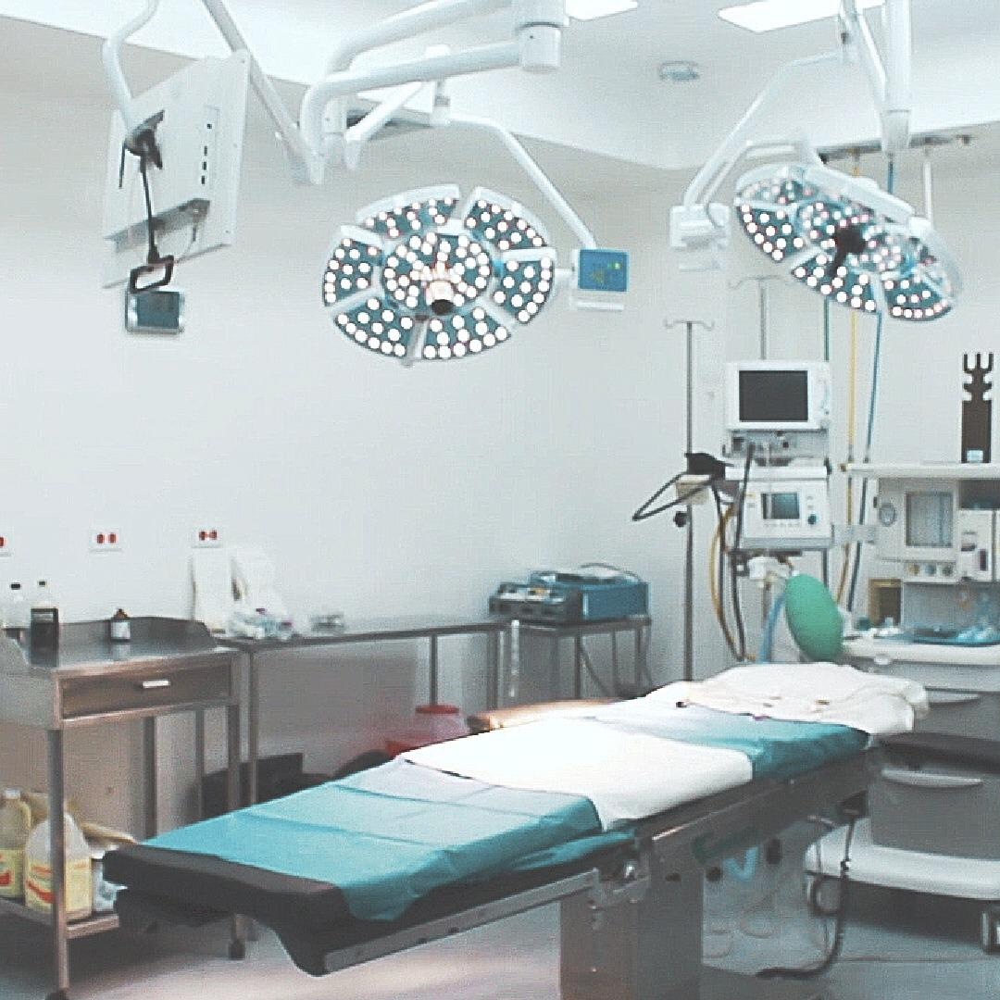
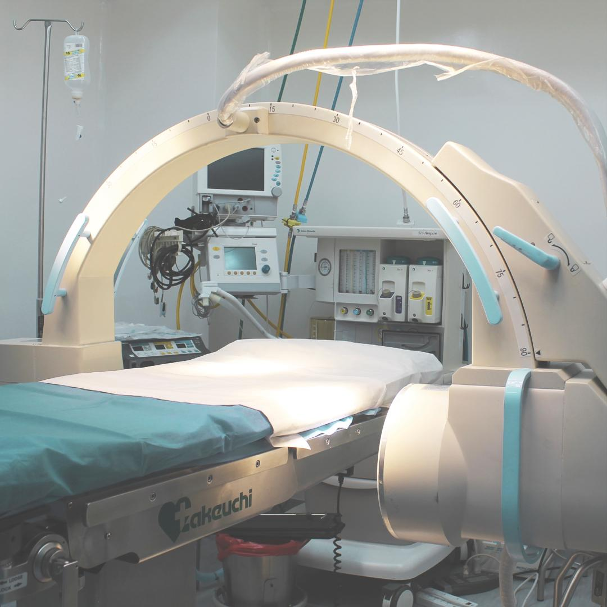
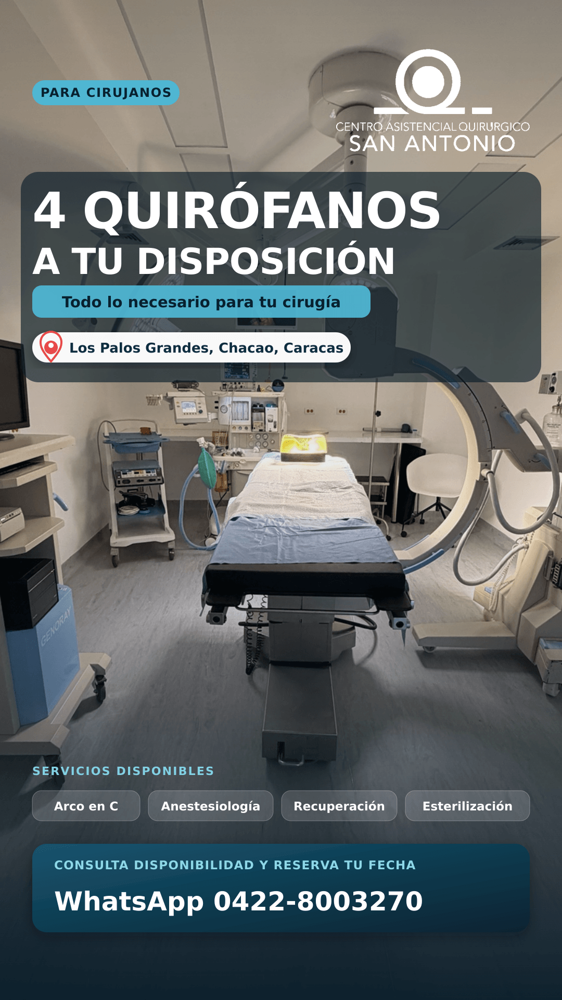
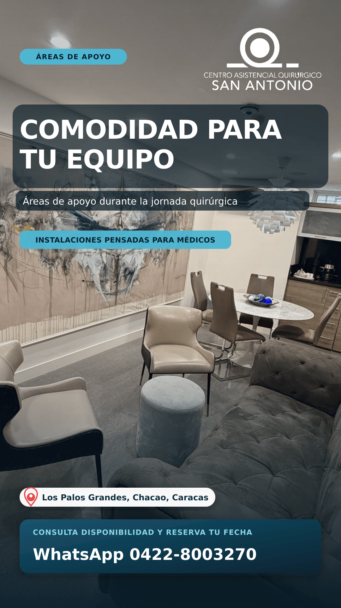
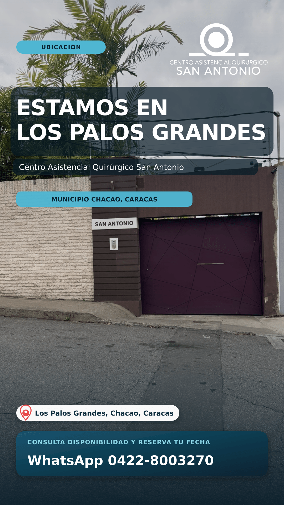

Cuatro quirófanos
Espacios para procedimientos electivos de diversas especialidades.
LOS PALOS GRANDES · CARACAS
Quirófanos para cirujanos de distintas especialidades, con equipo humano y apoyo para coordinar cada procedimiento.

PENSADO PARA TU PRÁCTICA
Cuéntanos qué cirugía vas a realizar, qué equipo necesitas y la fecha que tienes en mente. Nuestro equipo revisa contigo la disponibilidad y los recursos para tu caso.
Cómo solicitar un quirófanoEspacios para procedimientos electivos de diversas especialidades.
Personal de anestesia, instrumentación, enfermería circulante y recuperación, según la coordinación del caso.
Intensificador de imagen, esterilización y otros recursos. Confirma la disponibilidad específica al reservar.
NUESTRO CENTRO




ESPECIALIDADES
Si necesitas un equipo o una configuración particular, descríbenos tu procedimiento y lo revisamos contigo.
Consultar mi especialidadTRABAJEMOS JUNTOS
Indica tu especialidad, el procedimiento y una fecha tentativa.
Confirmamos espacios, equipos y los detalles de la coordinación.
Concretamos los siguientes pasos para la cirugía o una visita al centro.
VISÍTANOS
4.ª avenida de Los Palos Grandes, entre 4.ª y 5.ª transversal, Quinta San Antonio. Municipio Chacao, Caracas.
Atención: lunes a viernes, 8:00 a. m. a 5:00 p. m.
Fines de semana: cirugías programadas.
Podemos orientarte sobre cómo solicitar una evaluación.